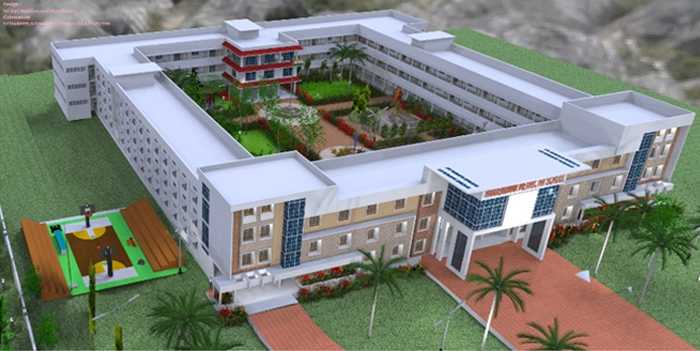

About PMHSS
Our School Profile
The Paavendhar Matric Hr. Sec. School are functioning under the auspices of Kongu Educational Trust, a philanthropic trust headed by respectful Members of Kongu truest. a registered body at Attur, Salem Dist. These are purely SELF FINANCING Schools which are not supported by any form of aid or grant from the Govt. The Present schools are the product of Vision, Dedication, Care, Affection and Hard Work rendered by Kongu Educational Trust, for students from the early twelve . This sincere working Kongu Educational Trust, has added colourful feather to this "GHEE TOWN" by offering excellent teaching and coaching thereby making Attur a GATE WAY to Professional Courses like M.B.B.S., B.E., B.V.Sc., B.Sc.(Agri).,Forestry., etc. They crafted “Excellence in Everything”. The Management is determined to impart high Quality Education with values of good conduct and character. The Management is keen in accepting responsibility and inculcates among the students, the perception of accepting responsibility.
PMHSS a co-educational English medium Matriculation School having classes from pre K.G to XII Standard is a landmark in M.V.South. The school par excellence in M.V.South, was started in 2008 with classes from pre K.G to VIII standard. The overwhelming support received from the parents of M.V.South encouraged the management to extend classes up to twelfth standard in the academic year 2011-12. Today, we are preparing more than 1500 kids per year towards a bright future.
Education PMHSS is a blend of academics and activities. The children are motivated to exhibit the best of their innate talents. The school provides an excellent atmosphere where learning is made fun and pleasurable to the students.
PMHSS has adopted a ‘Modern Approach’ to its system of education. The children are encouraged to be adept in the latest technologies and applications. Emphasis is also laid on fluency in the English Language, which has become a necessity in the modern world for effective worldwide communication and better job opportunities.
Our Motto
“Together we achieve”
Our Mission
To achieve excellence in Educational and Recognize the rules of education individual and nations.
Objectives of the School
- To impart quality education
- To imbibe the ability of thinking in English
- To enable the students to lead their lives in a more accomplished way
- To provide a conducive environment to learn and live with right values
- To produce worthwhile citizens in a truer sense
- To make them accustomed to the advanced, progressive techniques in the teaching learning process